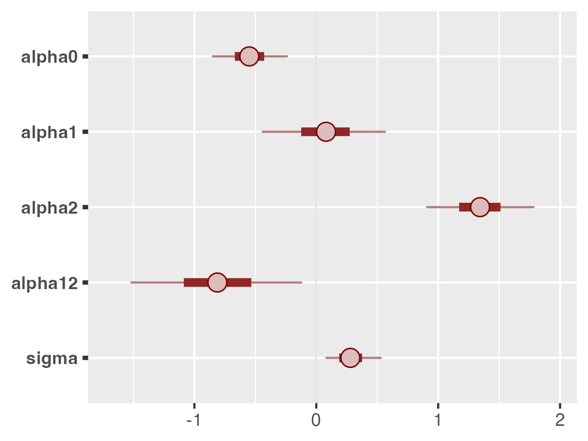
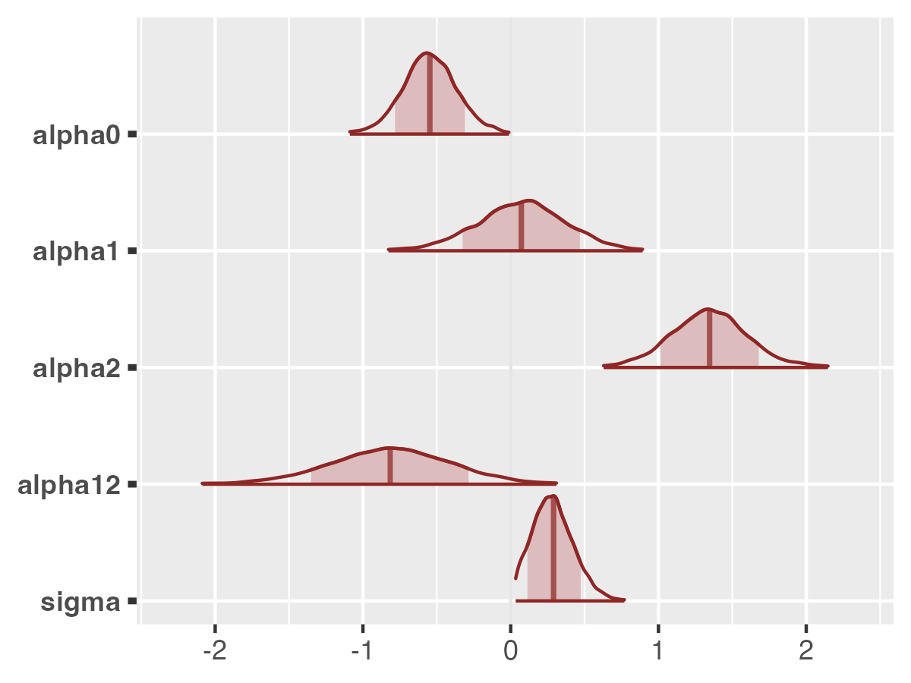
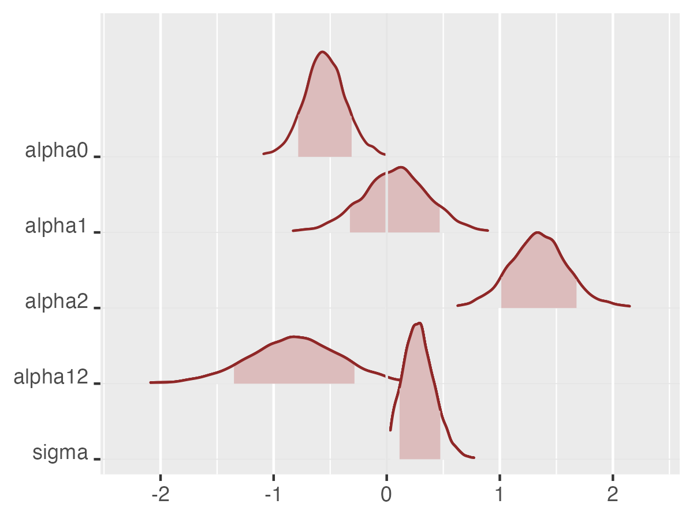
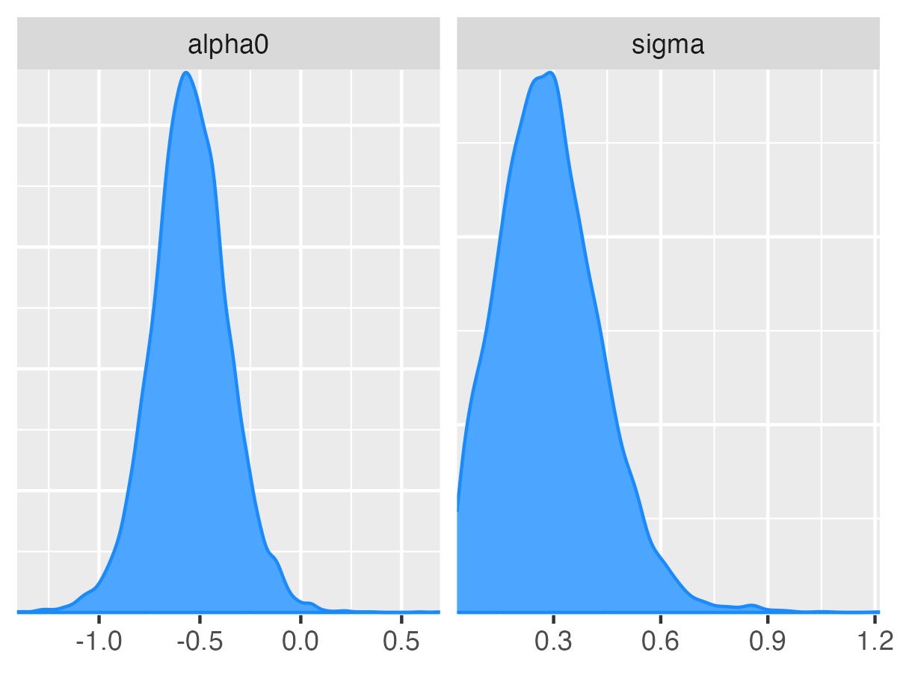
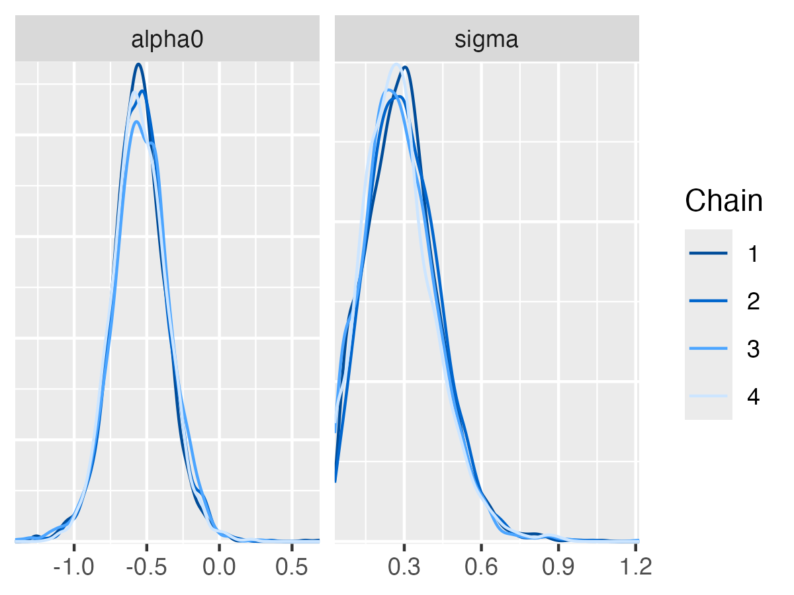
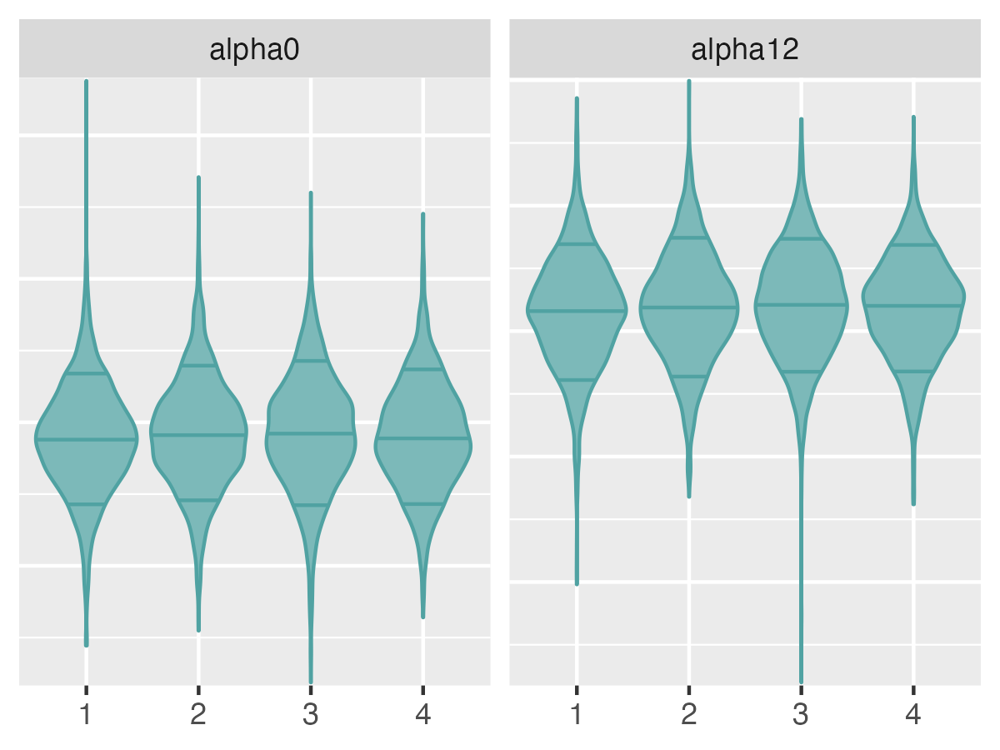

Plotting `rjuliabugs` draws using bayesplot package
using_bayesplot.RmdOverview
This article focuese on plotting the parameter estimates from the
MCMC draws obtained with the rjuliabugs::juliaBUGS()
sampler. We do not cover the MCMC diagnostics, neither other
visualizations tools or packages, although they could be easily adapted
with as we work with the params array from from the
rjuliabugs object. The plots showed here are the same as
the ones described in the original vignette of Jonah Habry and Martin
Modrák and we recommend the read of their article https://mc-stan.org/bayesplot/articles/visual-mcmc-diagnostics.html,
from each most of the code and plot here as the same as presented by
them.
For a initial setup we call the necessary models to visualize the examples
Example
As previously mentioned the goal of this vignette is exclusively to
show how to use and present some of the visualizations tools from
samples obtained from the sampler from rjuliabugs.
Therefore we will assume that the rjuliabugs model object
is already fitted and named as `rjuliabugs_fit``. For a full walkthrough
until this moment, please refer to the article named Get
Started until the section where we generate the posterior
draws from the sampler
Inspect the params object.
The rjuliabugs is a S3 object which
contains all the information and data used in the sampler. This
includes, from the the the name of identify the model object in the
Julia environment, the mcmc configuration
parameters to the posterior draws named as params which by
default is given by an 3D numeric array with respective dimensions being
(iterations chains parameters). The choice of array as the default is
due to its compatibility with most of other packages in R
enviroment to work with posterior samplers. However, the converstion to
other types to be comptabilite to other packages is possible through the
functions as_rvar, as_mcmc and
as_draws which can be called over the model object itself
(as_rvar(rjuliabugs)) or the rjuliabugs$params
object (as_rvar(juliabugs$params). See the reference
section for a complete documentation of the examples.
#> Preparing JuliaBUGS setup... DONE!
#> Initialising AbstractMCMC.sample()... DONE!Verifying the dimensions of the params object we would
have
dim(rjuliabugs_fit$params)
#> [1] 2000 4 5we have a total of 2000 iterations, 4 chains and 5 parameters that were stored.
Posterior uncertainty intervals
Central credible intervals from the posterior distribution can be
visualized using the mcmc_intervals function.
mcmc_intervals
color_scheme_set("red")
mcmc_intervals(rjuliabugs_fit$params, pars = rjuliabugs_fit$mcmc$params_to_save)
By default, the plot displays 50% credible intervals as bold lines
and 90% intervals as thinner outer segments. These settings can be
adjusted using the prob and prob_outer
parameters, respectively. The plotted points represent the posterior
medians; if preferred, the point_est option allows
switching to posterior means or suppressing point estimates
entirely.
To represent uncertainty with shaded regions beneath the posterior
density estimates, the mcmc_areas function can be
employed.
mcmc_intervals
mcmc_areas(
rjuliabugs_fit$params,
pars = rjuliabugs_fit$mcmc$params_to_save,
prob = 0.8, # 80% intervals
prob_outer = 0.99, # 99%
point_est = "mean"
)
mcmc_areas_ridges
We can also generate additional plots with by calling
mcmc_areas_ridges
mcmc_areas_ridges(
rjuliabugs_fit$params,
pars = rjuliabugs_fit$mcmc$params_to_save,
prob = 0.8, # 80% intervals
prob_outer = 0.99, # 99%
point_est = "mean"
) ## Univariate marginal posterior distributions
The bayesplot package includes functions for visualizing
marginal posterior distributions through histograms or kernel density
estimates, either by merging all Markov chains or displaying them
individually.
mcmc_hist
The mcmc_hist function plots marginal posterior
distributions (combining all chains):
color_scheme_set("blue")
mcmc_hist(rjuliabugs_fit$params, pars = c("alpha0", "sigma"))
mcmc_hist_by_chain
To visualize individual histograms for each of the four Markov
chains, the mcmc_hist_by_chain function can be used; it
generates separate facets for each chain within the plot.
color_scheme_set("darkgreen")
mcmc_hist_by_chain(rjuliabugs_fit$params, pars = c("alpha0", "sigma"))If we are interested in also display a transformation for display any
of the histograms, this is possible by setting the
transformations argument.
color_scheme_set("darkgreen")
mcmc_hist_by_chain(rjuliabugs_fit$params, pars = c("alpha0", "sigma"),
transformations = list("sigma" = "log"))Many of the plotting functions for MCMC draws also include a
transformations argument to apply transformations to the
parameters before plotting.
mcmc_dens
The mcmc_dens function works similarly to
mcmc_hist, but it displays kernel density estimates in
place of histograms. This include a version of
mcmc_dens_by_chain.
color_scheme_set("brightblue")
mcmc_dens(rjuliabugs_fit$params, pars = c("alpha0", "sigma"))
mcmc_dens_overlay
Similar to mcmc_hist_by_chain, the
mcmc_dens_overlay function distinguishes between Markov
chains; however, rather than showing them in separate panels, it
overlays their density estimates in a single plot.
mcmc_dens_overlay(rjuliabugs_fit$params, pars = c("alpha0", "sigma"))
mcmc_violin
The mcmc_violin function visualizes the density
estimates for each chain using violin plots and adds horizontal lines at
quantiles specified by the user.
color_scheme_set("teal")
mcmc_violin(rjuliabugs_fit$params, pars = c("alpha0", "alpha12"))